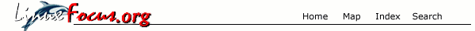
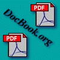
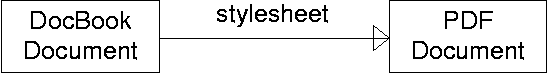

![[Bottom bar]](pdf.files/Bottombar-en.gif)
Автор Egon Willighagen
Об
авторе:
Вступил в Голландское отделение LinuxFocus в 1999г. и уже в начале
этого года стал вторым редактором. Учится в университете Неймегена на
факультете информационной химии. Играет в баскетбол и любит
путешествовать.
Содержание:
- Что
такое DocBook?
- Пишем
заметку
- Добавление
текста и другой информации
- Преобразование
документа в формат PDF
- Заключение
- Ссылки
|
Создание PDF документов с использованием DocBook

Резюме:
Эта заметка рассказывает об использовании DocBook для разработки PDF -
документов, утилитах для редактирования DocBook документов и перевода их в PDF -
документы. В заметке не рассказывается об инсталляции утилит - они просто
перечисляются, эта заметка предназначена опытным пользователям ОС Linux.
В первой части рассказывается о формате DocBook документов. После введения я
расскажу об утилитах, необходимых для преобразования DocBook документов в PDF
формат для просмотра их программой Acrobat.
Что такое DocBook?
DocBook [1]
- приложение SGML, предназначенное для разметки документов, такое же, как HTML
для разметки веб - документов. В отличие от HTML, DocBook не предоставляет
информацию о формате документа. Поэтому документы DocBook должны быть
преобразованы в другой формат для просмотра. Преобразование в другой формат
осуществляют с помощью утилит, применяющих некоторый шаблон к документам
DocBook.

Рисунок 1:
Преобразование DocBook документа в формат PDF с использованием шаблона.
Немного ниже, в данной заметке, рассмотрим, какие шаблоны и утилиты
использовать для преобразования DocBook документов. Но сначала рассмотрим как
составляются документы.
Пишем заметку
С помощью DocBook можно разметить два вида документов : заметки и книги.
Из-за схожести в структуре этих документов, я буду использовать заметку. Перед
написанием примера документа рассмотрим основы DocBook.
DocBook это SGML - приложение, такое же как HTML. Но существует и XML версия
DocBook. XML - версия более строгая, но более легкая в понимании и изучении. Так
как XML также является SGML - приложением, все программые средства SGML могут
быть использованы. Основное различие между SGML и XML состоит в следующем
(применимо для всех XML - приложений).
- XML элементы должны быть всегда закрыты
- XML элементы должны иметь правильную вложенность
Это означает, что
вы не можете использовать <BR> как в HTML, вы должны использовать
<BR></BR>. Второе требование означает, что вы не можете использовать
следующую конструкцию : <B><A HREF="some_url">click
here</B></A>, вы должны использовать правильную вложенность :
<B><A HREF="some_url">click here</A></B>.
Теперь, после рассмотрения этих деталей, мы можем приступить к разработке
DocBook документа.
<?xml version="1.0"?>
<article>
<title>Writing DocBook articles</title>
<artheader>
<abstract>
This article describes how you can use DocBook to develop
PDF documents and will cover tools you need to edit DocBook
articles and tools to translate them to PDF documents.
</abstract>
<author>
<firstname>Egon</firstname>
<surname>Willighagen</surname>
</author>
<date></date>
</artheader>
</article>
Ничего сложного - мы начали заметку с заголовка, короткого резюме, даты
написания и имени автора.
Далее добавляем разделы заметки, используя соответствующие элементы :
<?xml version="1.0"?>
<article>
<title>Writing DocBook articles</title>
<artheader>
... the articles header ...
</artheader>
<section>
<title>Introduction</title>
</section>
... other sections ...
</article>
Мы добавили раздел Введение. Дополнительные элементы могут быть
использованы для добавления разделов - Результаты, Выводы и
т.д.
Добавление текста и другой информации
Весь текст заключатся в элементы para, подобные элементам
p языка HTML :
<section>
<title>Introduction</title>
<para>
DocBook is an SGML application
developed to markup documents, just like HTML marks up webdocuments.
</para>
</section>
Кроме текстовых элементов существует много других. Далее рассмотрим, как
другие элементы - примеры, списки, изображения могут быть использованы в
документе.
Добавление "примеров"
Примеры добавляются применением элемента example, как показано
в следующем фрагменте кода :
<example>
<title>Perl program that converts an XML document into a HTML page.</title>
<programlisting>
#!/usr/bin/perl -w
use diagnostics;
use strict;
use XML::XSLT;
my $XSLTparser = XML::XSLT->new();
$XSLTparser->open_project ("file.xml", "stylesheet.xsl", "FILE", "FILE");
$XSLTparser->process_project;
$XSLTparser->print_result();
</programlisting>
</example>
Но примеры могут также содержать текст, изображения и др. информацию.
Добавление "списков"
Подобно языку HTML, DocBook использует списки. Списки обозначаются элементом
itemizedlist, который состоит из одного или нескольких элементов
listitem :
<itemizedlist>
<listitem>
<para>an item</para>
</listitem>
<listitem>
<para>another item</para>
</listitem>
<listitem>
<para>and again an item</para>
</listitem>
</itemizedlist>
Обратите внимание, что текст заключен в элемент
para.
Текст всегда должен использоваться внутри этого элемента!
Списки могут быть упорядочены. Для этого необходимо использовать элемент
orderlist вместо itemizedlist. Добавление числового
параметра (например <orderedlist numeration="Arabic">) - устанавливает
используемый.
Добавление изображений
Изображения добавляются следующим образом :
<mediaobject>
<imageobject>
<imagedata fileref="some_picture.gif" format="gif"/>
</imageobject>
<textobject>
<para>
If you were not using <productname>Lynx</productname>
you could now see a picture.
</para>
</textobject>
</mediaobject>
Обратите внимание - кроме изображения используется текст. В самом
деле я мог бы использовать и фильм. Утилита, которая будет использована для
преобразования документа DocBook в формат PDF, сама подберет подходящий формат -
возможно это будет изображение.
Также обратите внимание на разметку слова Lynx. Это особенность языков
разметки - формат отделен от информации. Заметка рассказывает о товаре Lynx, для
которого Lynx является названием. Применяемый шаблон содержит информацию о
формате вывода элемента productname, например курсивом. В
следующем разделе рассмотрим дополнительные возможности разметки слов.
Разметка слов
В предыдущем разделе было показано, что слова имеют свои элементы разметки.
Рассмотрим некоторые из них :
| Элемент
| Описание |
| abbrev
| Сокращение - неполное написание чего - либо.
Пример:
<para><abbrev>e.g.</abbrev>
means for example.</para> |
| acronym
| Сложносокращенное слово.
Пример:
<para><acronym>DSM</acronym>
(chemical company) means "De StaatsMijnen" (=The State
Mines).</para> |
| email
| Адрес электронной почты.
Пример:
<para>My email
is <email>[email protected]</email></para> |
| keyword
| Ключевое слово.
Пример:
<para>In my humble
opinion <keyword>chemistry</keyword> is very
important.</para> |
Другие элементы доступны
в пункте [2]
раздела
"Ссылки".
Теперь, после рассмотрения элементов DocBook, приступим к созданию PDF
документа.
Преобразование документа в формат PDF
Документ DocBook можно преобразовать к другим форматам. Кроме PDF мы можем
преобразовать к следующим форматам : веб, PostScript, Tex, RTF - который может
быть прочитан такими редакторами как WordPerfect, Word, StarWriter и др. Но в
этой заметке мы рассмотрим преобразование только в PDF формат.
Документы DocBook могут быть созданы с помощью любых текстовых редакторов,
например Vi или Nedit. Но лучше использовать Emacs : Norman Walsh написал "Emacs
major mode for docbook" [3],
содержащий полезные дополнения : завершение имен элементов, вставка
шаблонов.
Кроме того, могу предложить примеры,
используемые в данной заметке.
Как было сказано раньше - нам необходим шаблон и программное средство,
которое использует данный шаблон для преобразования DocBook документа в PDF
формат. В действительности шаблон не преобразует DocBook документ в формат PDF,
но создает TeX файл. Мы используем шаблон Norman
Walsh's Modular DocBook Stylesheets, написанный на DSSSL.
Для использования шаблона DSSSL необходим редактор DSSSL. Я использую Jade,
разработанный Джеймсом Кларком (поддержка продукта прекращена). Замена - OpenJade,
но я его не использовал.
Обратите внимание - программные пакеты (Modular Stylesheets, Jade и
JadeTex) входят в состав дистрибутивов, использующих пакетную установку
(RedHat, Suse, Corel, Debian)! Поэтому сначала посмотрите вашу инсталляционную
программу, CD или веб сайт дистрибьютора.
Я использую Debian и Walsh's Modular Stylesheets у меня инсталлированы в
/usr/lib/sgml/stylesheets/dsssl/docbook/nwalsh/print/ и используют параметр "-d"
для Jade и "-t" для TeX расширения файла :
egonw@localhost> ls -al
total 3
-rw-r--r-- 1 egonw egonw 2887 Apr 8 22:06 docbook_article.xml
egonw@localhost> jade -t tex -d /usr/lib/sgml/stylesheets/dsssl/docbook/nwalsh/print/docbook.dsl docbook_article.xml
egonw@localhost> ls -al
total 21
-rw-r--r-- 1 egonw egonw 2887 Apr 8 22:06 docbook_article.xml
-rw-r--r-- 1 egonw egonw 17701 Apr 8 22:29 docbook_article.tex
Jade создает TeX файл. Этот файл можно преобразовать в PDF формат
используя утилиту
pdfjadetex, входящую в пакет JadeTeX:
egonw@localhost> ls -al
total 21
-rw-r--r-- 1 egonw egonw 2887 Apr 8 22:06 docbook_article.xml
-rw-r--r-- 1 egonw egonw 17701 Apr 8 22:29 docbook_article.tex
egonw@localhost> pdfjadetex docbook_article.tex
Получаем файлdocbook_article.pdf.
Обратите внимание на добавление множества служебной информации - заголовок в
начале каждой страницы, использование различных шрифтов. В начале изучения
DocBook я тратил много времени на составление подходящих сочетаний. Эта заметка
показывает только одно из таких сочетаний.
Заключение
Возможности языка DocBook XML велики. Например преобразование в другие
форматы. Эта заметка представляет краткое вступление. Вопросы можно задать на
странице отзывов для данной статьи. Дополнительная информация в ссылках [8]
и [9].
Обратите внимание, что последний пункт в разделе "Ссылки" в формате DocBook!
Остались без обсуждения следующие возможности DocBook :
- расширенное значение библиографической информации ;
- ссылки к другим разделам, примерам.
Возможно это темы для
следующих заметок.
Ссылки
1. DocBook
website
2. Quick Reference:
DocBook Elements
3. Emacs major mode for
DocBook
4. <a
href="http://nwalsh.com/docbook/dsssl/index.html">The Modular DocBook
Stylesheets
5. Jade
6. OpenJade
7. JadeTeX
8. Norman Walsh's
DocBook site
9. DocBook:
The Definate Guide on SGML variant
Webpages maintained by the LinuxFocus Editor team
© Egon Willighagen
LinuxFocus.org 2000
Click here to report a fault or send a
comment to Linuxfocus
|
Translation
information:
|
2000-07-05, generated by lfparser version
1.5